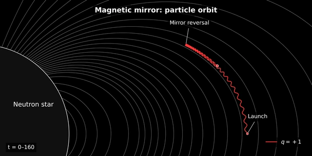
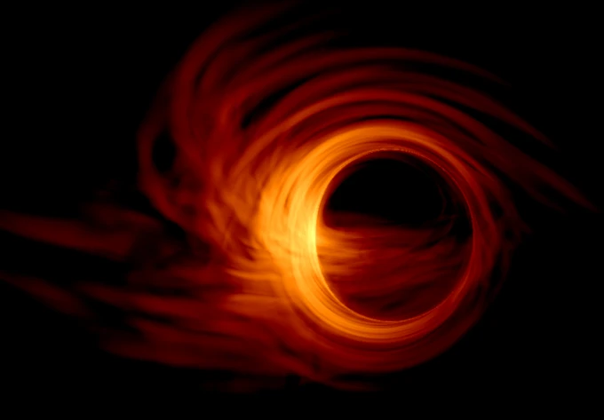
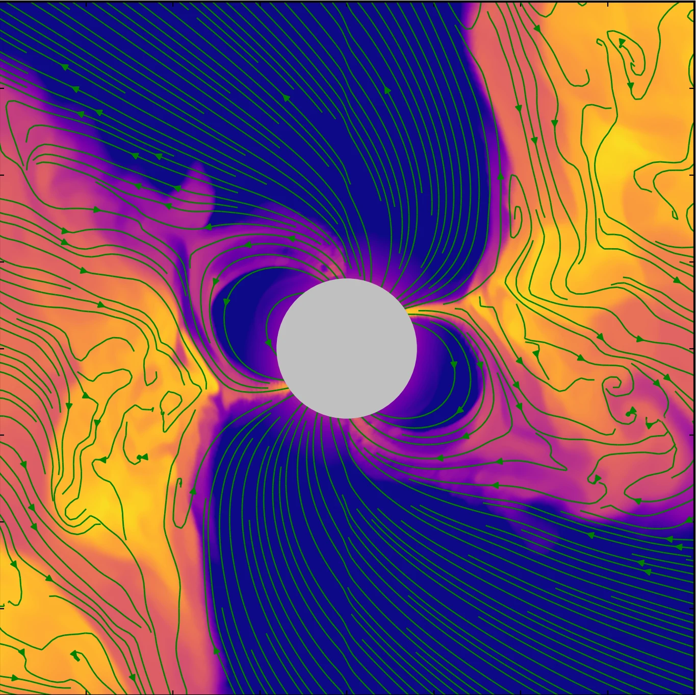
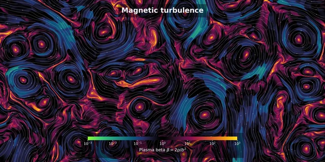
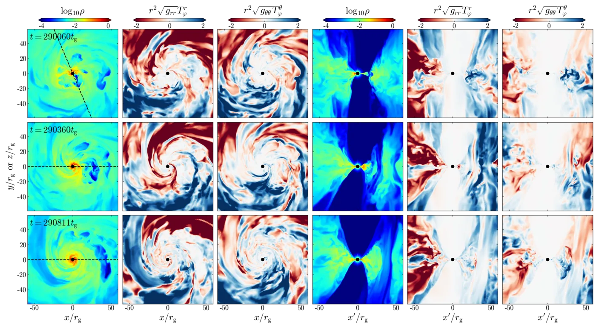
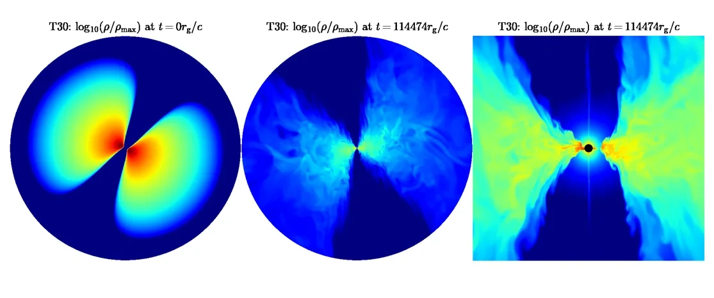
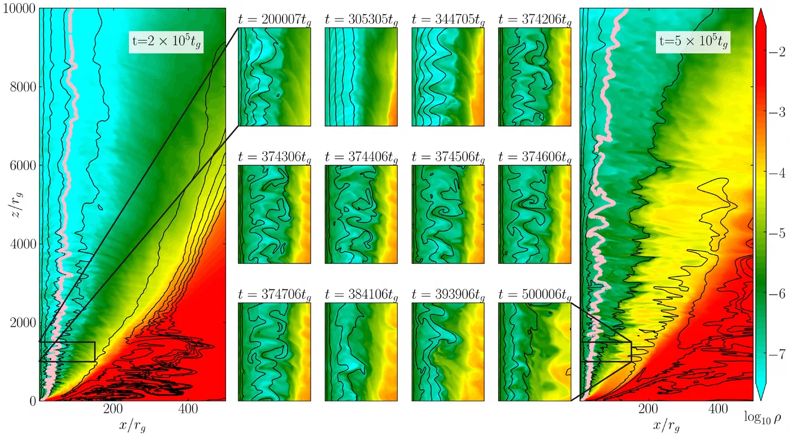
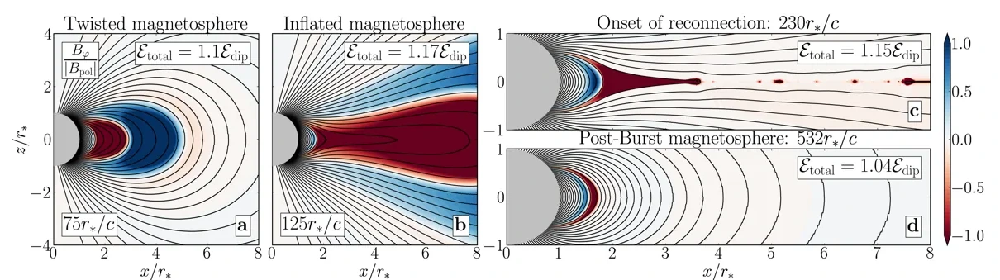

Accretion onto magnetized neutron stars
Ongoing simulations show how a tilted disk can warp, feed magnetically confined columns, and power collimated outflows around a neutron star.
Ongoing work

I’m fascinated by how matter and magnetic fields turn a black hole’s gravity into brilliant radiation and powerful jets.

Neutron stars bring gravity, dense matter, and intense magnetic fields together. I’m curious how they power eruptions and shape accreting gas.

I enjoy exploring how tangled magnetic fields reconnect, stir turbulence, and accelerate particles in extreme environments.
How does magnetized gas feed black holes, and how does the energy released shape their surroundings? My simulations explore magnetic eruptions in arrested accretion flows, the alignment of tilted disks, and jets that carry energy far beyond the black hole.
Three-dimensional GRMHD simulations, including the GPU-accelerated H-AMR code I co-developed, are combined with radiative transfer and synthetic imaging. This work connects the dynamics of accretion and jets to flares, spectra, and images that astronomers can observe.

Long-duration simulations show how magnetic flux builds up and erupts, disrupting accretion and driving winds and rapid variability.
View paper ↗
Three-dimensional simulations show how magnetic fields can realign tilted accretion flows and how strong misalignment can interrupt jets.
View paper ↗
High-resolution simulations show how magnetic instabilities and entrained gas can produce a fast inner jet surrounded by a slower sheath.
View paper ↗Intense magnetic fields shape neutron-star environments, from giant magnetar bursts to the interaction of an accretion disk with a rotating magnetosphere. My magnetar simulations show how twisting the stellar surface can trigger an eruption, eject plasma, and heat the magnetosphere.
I implemented a hybrid force-free electrodynamics and MHD approach in H-AMR to study magnetospheres alongside accretion. My current three-dimensional simulations examine how tilted disks warp, feed magnetically confined columns, and drive collimated outflows.

Relativistic simulations follow a twisted magnetosphere as it erupts, ejecting magnetized plasma and leaving a hot trapped fireball.
View paper ↗
Ongoing simulations show how a tilted disk can warp, feed magnetically confined columns, and power collimated outflows around a neutron star.
Ongoing work
How do turbulence and magnetic reconnection release energy in the plasmas around compact objects? These processes can restructure accretion flows and magnetospheres, helping to connect microscopic particle dynamics with large-scale eruptions and jets.
Local MHD simulations and test particles complement measurements from global simulations. My current work examines how reconnection, shear, and turbulence inject and accelerate particles, and how those processes relate to magnetic structures in larger-scale flows.
Ongoing local simulations use test particles to examine how turbulence, shear, and reconnection accelerate particles in astrophysical plasmas.
Ongoing work